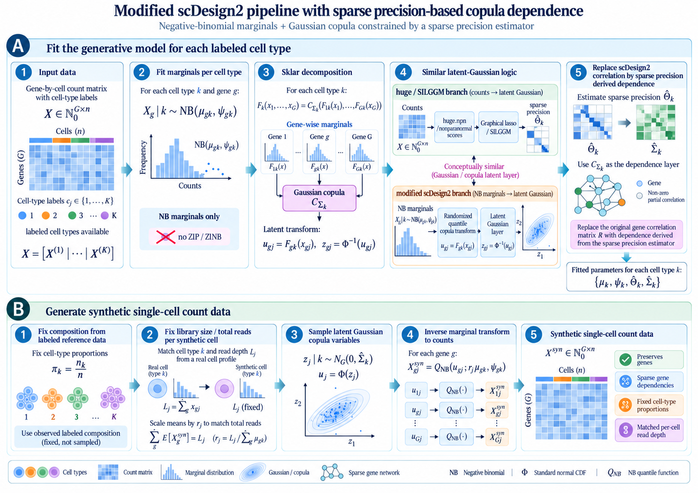
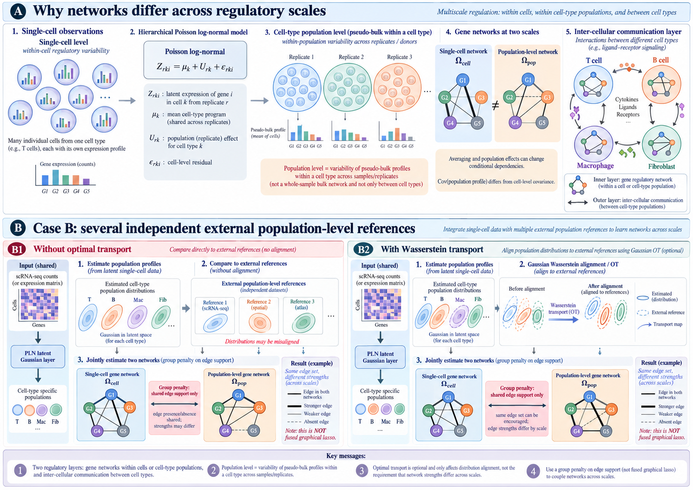

%%{init: {"theme": "sandstone"}}%%
flowchart TD
A["Cells of type j"] --> B["Affine lift"]
A --> D["Bootstrap or scDesign2"]
B --> E["mu_j, Sigma_j"]
D --> E
E --> F["DeCovarT convolution across types"]
5 From single cells to type-level Gaussians
DeCovarT does not ingest single-cell profiles. It needs, for each labelled type j, a population-level Gaussian (\boldsymbol{\mu}_{\cdot j},\boldsymbol{\Sigma}_{j}) whose precision is sparse. This chapter is about lifting cell-level observations to that object, and about checking that the lift still represents the cells.
5.1 Alignment of type-level Gaussians
Two strategies are in the core. Optimal transport and mechanistic simulators are perspectives (Section 5.6.1).
- Affine invariance. Closed-form means and covariances when cells of one type are independent Gaussians.
- Resampling. A technical bootstrap of cells, and Monte Carlo from
scDesign2, with negative-binomial margins and a Gaussian copula tied to the sparse precision (Section 5.4).
Warning 5.1: :warning: A within-type sum is not the bulk convolution
Write \boldsymbol{x}_{c\cdot j} for cell c of type j. The object of this chapter is a sum inside one type,
\widetilde{\boldsymbol{x}}_{\cdot j} = \sum_{c\in C_{j}} w_{c}\,\boldsymbol{x}_{c\cdot j}, \tag{5.1}
with \sum_{c}w_{c}=1 or w_{c}\equiv 1. Independent cells add means and add covariances with weights w_{c}^{2}. That sum estimates \boldsymbol{\mu}_{\cdot j} and \boldsymbol{\Sigma}_{j}.
The DeCovarT observation is a convolution across types,
\boldsymbol{y} = \sum_{j=1}^{J} p_{j}\,\boldsymbol{x}_{\cdot j}^{\mathrm{pop}}, \qquad \mathrm{Cov}(\boldsymbol{y}) = \sum_{j}p_{j}^{2}\boldsymbol{\Sigma}_{j}. \tag{5.2}
The factor p_{j}^{2} belongs to that convolution. This chapter compares \{\boldsymbol{x}_{c\cdot j}\}_{c\in C_{j}} with \mathcal{N}(\boldsymbol{\mu}_{\cdot j},\boldsymbol{\Sigma}_{j}).
5.2 Affine lift and the precision-sparsity caveat
5.2.1 Independent Gaussian cells
Assume, for a fixed type j (subscript dropped),
\boldsymbol{x}_{c} \sim \mathcal{N}_{G}(\boldsymbol{\mu}_{c},\boldsymbol{\Sigma}_{c}) \quad\text{independent in }c. \tag{5.3}
Affine closure of multivariate Gaussians (linear transformation theorem) gives
\widetilde{\boldsymbol{x}} = \sum_{c} w_{c}\boldsymbol{x}_{c} \sim \mathcal{N}_{G}\!\left( \sum_{c}w_{c}\boldsymbol{\mu}_{c},\; \sum_{c}w_{c}^{2}\boldsymbol{\Sigma}_{c} \right). \tag{5.4}
Special cases used in practice:
| Weights | Mean | Covariance | Precision |
|---|---|---|---|
| w_{c}=1 (sum of n i.i.d. cells) | n\boldsymbol{\mu} | n\boldsymbol{\Sigma} | n^{-1}\boldsymbol{\Theta} |
| w_{c}=1/n (average) | \boldsymbol{\mu} | n^{-1}\boldsymbol{\Sigma} | n\boldsymbol{\Theta} |
| w_{c}=S_{c}/\sum S_{c'} (library-size weights) | \sum w_{c}\boldsymbol{\mu}_{c} | \sum w_{c}^{2}\boldsymbol{\Sigma}_{c} | inverse of that sum |
Zeros of \boldsymbol{\Theta} survive the sum only when every cell shares the same covariance. If \boldsymbol{\Sigma}_{c}=\boldsymbol{\Sigma} for all c, then \boldsymbol{\Sigma}_{\widetilde{\boldsymbol{x}}}=(\sum_{c}w_{c}^{2})\boldsymbol{\Sigma} and
\boldsymbol{\Theta}_{\widetilde{\boldsymbol{x}}} = \frac{1}{\sum_{c}w_{c}^{2}}\,\boldsymbol{\Theta}, \tag{5.5}
so the zero pattern is unchanged. If the cells have different \boldsymbol{\Sigma}_{c},
\boldsymbol{\Theta}_{\widetilde{\boldsymbol{x}}} = \Bigl(\sum_{c}w_{c}^{2}\boldsymbol{\Sigma}_{c}\Bigr)^{-1}, \tag{5.6}
and inversion does not commute with summation. A gastruloid label is already a continuum, so heterogeneous cells inside one type break a naïve transfer of sparsity.
Core use. Treat labelled cells of type j as exchangeable draws from one \mathcal{N}(\boldsymbol{\mu}_{\cdot j},\boldsymbol{\Sigma}_{j}), estimate that law (graphical lasso, SILGGM, or PLNnetwork), and export it. Equation 5.4 then describes a pseudo-bulk of i.i.d. draws from that same law. If GmGM (Section 4.6.1) finds a non-trivial cell-axis precision, the i.i.d. hypothesis is already false and Equation 5.5 is an approximation.
5.2.2 Mean and covariance that DeCovarT actually wants
DeCovarT’s \boldsymbol{\mu}_{\cdot j} is a cross-cell mean of the purified profile, analogous to MuSiC’s cross-sample mean (Wang et al. 2019). Empirically,
\widehat{\boldsymbol{\mu}}_{\cdot j} = \frac{1}{n_{j}}\sum_{c\in C_{j}}\boldsymbol{x}_{c\cdot j} \quad\text{(linear scale)}, \tag{5.7}
and \widehat{\boldsymbol{\Sigma}}_{j} comes from the GGM or PLN fit on the gene panel. The unstructured sample covariance of thousands of genes is singular for G>n_{j} and dense. The sparse precision is inverted to an SPD covariance for the likelihood. The convolution uses \boldsymbol{\Sigma}_{j} of the population profile, the same object whose mean is \boldsymbol{\mu}_{\cdot j}.
5.3 Bootstrap
Resample cells with replacement within type, labels fixed. Each replicate yields (\hat{\boldsymbol{\mu}}^{\ast},\widehat{\boldsymbol{\Theta}}^{\ast}) and therefore edge-inclusion frequencies (Section 6.2) and Monte Carlo error for MixSim overlap and for downstream \hat{\boldsymbol{p}}.
This uncertainty is conditional on this gastruloid experiment. It does not stand in for organoid-to-organoid variability (Squair et al. 2021). Calling technical pseudo-bulks biological replicates is the error flagged in Note 3.4. Multiple donors would allow resampling of experimental units. Suppinger does not provide them. External cohorts (for example GSE250136) are for validation.
5.4 scDesign2 with a precision-based copula
scDesign2 fits a joint count model per labelled cell type, then draws synthetic cells from it (Sun et al. 2021). The published fit chooses a count margin gene by gene and estimates a Gaussian copula correlation from the data. The arm used here keeps the two-step layout and changes the dependence: margins are negative binomial, and the copula correlation is the correlation matrix of \widehat{\boldsymbol{\Sigma}}_{j}=\widehat{\boldsymbol{\Theta}}_{j}^{-1}.

5.4.1 Fit: negative-binomial margins and Sklar’s decomposition
For cells of type j and gene g,
X_{cg}\mid j \sim \mathrm{NB}(\mu_{gj},\psi_{gj}).
Zero-inflated margins are not used (Note 4.5). The joint distribution factors by Sklar’s theorem (Theorem 5.1): gene-wise cdfs F_{gj} carry the margins, and a copula carries the dependence. The Gaussian copula is the cdf of a standard normal vector with correlation R_{j}. On a cell,
u_{cg}=F_{gj}(X_{cg}), \qquad z_{cg}=\Phi^{-1}(u_{cg}),
with a randomised quantile on the integer margin so that u_{cg} is continuous (Note 5.2).
That latent map is the same idea as huge.npn() followed by a Gaussian precision (Section 4.3.1, Section 4.3.2, Note 4.3): monotone margins, then a Gaussian vector. SILGGM estimates the precision of those scores. Here the precision is already the exported \widehat{\boldsymbol{\Theta}}_{j}, and the copula is not refit. The correlation that enters the copula is
R_{gg'} = \frac{\Sigma_{gg'}}{\sqrt{\Sigma_{gg}\,\Sigma_{g'g'}}}, \qquad \boldsymbol{\Sigma} = \widehat{\boldsymbol{\Theta}}_{j}^{-1}. \tag{5.8}
R is the correlation of that covariance. It is not the matrix of partial correlations, and it is not the Pearson correlation of the raw counts.
Theorem 5.1 (Sklar’s theorem) Let F be a G-dimensional cdf with margins F_{1},\ldots,F_{G}. There exists a copula C:[0,1]^{G}\to[0,1] such that
F(x_{1},\ldots,x_{G}) = C\bigl(F_{1}(x_{1}),\ldots,F_{G}(x_{G})\bigr). \tag{5.9}
If every F_{g} is continuous, C is unique. If some margins are discrete, C is uniquely determined only on the product of the ranges of those marginal cdfs (Wikipedia: Sklar’s theorem).
Note 5.2: :information_source: Counts need a randomised quantile
UMI counts are discrete, so Theorem 5.1 does not give a unique copula density. The fit draws U\sim\mathrm{Unif}(0,1) and spreads each integer before applying F_{gj} and \Phi^{-1}. The Gaussian copula on that scale is the dependence model in Figure 5.2. Clayton, Gumbel, and t copulas are not used.
5.4.2 Generate: freeze proportions and library size
Cell types are labelled, so the synthetic sample keeps the observed composition and the observed read depths.
- Cell-type proportions stay \pi_{j}=n_{j}/n. They are not redrawn.
- For each synthetic cell of type j, the library size L is taken from a real cell of that type. Gene means are scaled so that \sum_{g}\mathbb{E}[X_{g}]=L.
- Draw the latent Gaussian \boldsymbol{z}\sim\mathcal{N}(0,R_{j}), set u_{g}=\Phi(z_{g}), and invert the negative-binomial quantile function at (\mu_{gj},\psi_{gj}).
The synthetic matrix has the same genes, the same type proportions, and matched per-cell depth. Re-fitting \boldsymbol{\Theta}_{j} on it is the recovery check for the exported precision.
5.5 What we would actually run
- Export (\boldsymbol{\mu}_{\cdot j},\boldsymbol{\Sigma}_{j}) from one sparse precision per labelled type, on the linear scale of
- Trust Equation 5.5 only for i.i.d. cells that share that covariance.
- Technical bootstrap within type (Section 5.3). Do not label those replicates as biological.
scDesign2as above: negative-binomial margins, copula correlation Equation 5.8, proportions and library sizes fixed from the labelled profile.
5.6 Perspectives
5.6.1 Two-scale optimal transport
Single-cell residual variation and variation of cell-type profiles across independent samples are different covariances. With a latent Gaussian Z for cell c of type k in sample r,
Z_{rkc} = \mu_{k} + U_{rk} + \varepsilon_{rkc},
U_{rk} has covariance \Sigma_{\mathrm{pop}} and \varepsilon has covariance \Sigma_{\mathrm{cell}}. The average of n cells then has covariance \Sigma_{\mathrm{pop}}+n^{-1}\Sigma_{\mathrm{cell}}, so the two precisions differ even when they share edges. Figure 5.3 draws those two networks side by side.
The regular case is an external population Gaussian Q_{R}=\mathcal{N}(\mu_{R},\Sigma_{R}), independent of the single-cell fit. Alignment is the closed-form 2-Wasserstein distance between the estimated population law \mathcal{N}(\mu_{P},\Omega_{P}^{-1}) and Q_{R},
W_{2}^{2} = \|\mu_{P}-\mu_{R}\|_{2}^{2} + \operatorname{tr}\Bigl( \Omega_{P}^{-1} + \Sigma_{R} - 2 \bigl( \Omega_{P}^{-1/2} \Sigma_{R} \Omega_{P}^{-1/2} \bigr)^{1/2} \Bigr). \tag{5.10}
The optimal map is affine. It moves one population Gaussian onto the other. It does not replace \Omega_{\mathrm{cell}}. A separate penalty can encourage shared edges between the cell-level and population-level precisions; that penalty is not the transport. DecOT estimates bulk proportions by an entropic transport loss between count histograms (Liu et al. 2022). That is a deconvolution competitor, not a construction of \boldsymbol{\Theta}_{j}.

5.6.2 scMultiSim
scMultiSim is a mechanistic multi-omics generator: a user GRN, plus chromatin, RNA velocity, space, and cell–cell interaction (Li et al. 2025). The RNA channel can emit counts from a known skeleton for AUPRC (Section 6.3). The other modalities are outside this design. The default synthetic counts are the scDesign2 arm above.
Li, Hechen, Ziqi Zhang, Michael Squires, Xi Chen, and Xiuwei Zhang. 2025. “scMultiSim: Simulation of Single-Cell Multi-Omics and Spatial Data Guided by Gene Regulatory Networks and Cell–Cell Interactions.” Nature Methods 22 (5): 982–93. https://doi.org/10.1038/s41592-025-02651-0.
Liu, Gan, Xiuqin Liu, and Liang Ma. 2022. “DecOT: Bulk Deconvolution with Optimal Transport Loss Using a Single-Cell Reference.” Frontiers in Genetics 13. https://doi.org/10.3389/fgene.2022.825896.
Squair, Jordan W., Matthieu Gautier, Claudia Kathe, et al. 2021. “Confronting False Discoveries in Single-Cell Differential Expression.” Nature Communications 12 (1). https://doi.org/10.1038/s41467-021-25960-2.
Sun, Tianyi, Dongyuan Song, Wei Vivian Li, and Jingyi Jessica Li. 2021. “scDesign2: A Transparent Simulator That Generates High-Fidelity Single-Cell Gene Expression Count Data with Gene Correlations Captured.” Genome Biology 22 (1): 163. https://doi.org/10.1186/s13059-021-02367-2.
Wang, Xuran, Jihwan Park, Katalin Susztak, Nancy R. Zhang, and Mingyao Li. 2019. “Bulk Tissue Cell Type Deconvolution with Multi-Subject Single-Cell Expression Reference.” Nature Communications 10. https://doi.org/10.1038/s41467-018-08023-x.